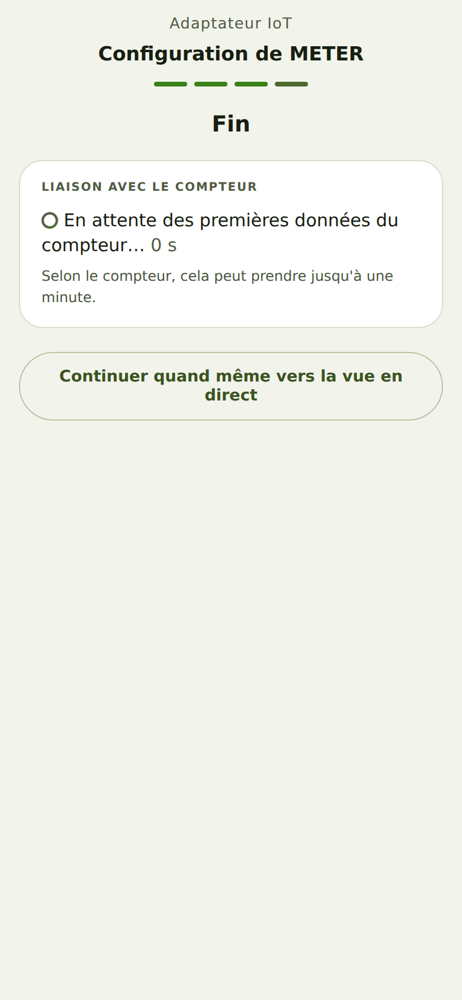

« En attente des premières données » ne disparaît pas
De quoi il s'agit
En tant que propriétaire d'un gPlug, je veux savoir combien de temps le contrôle peut durer, afin de ne rien changer trop tôt.
Comment faire
- Après l'enregistrement du profil de compteur, Liaison avec le compteur affiche En attente des premières données du compteur… avec un
compteur de secondes.

Le contrôle attend - Attendez jusqu'à une minute. Certains compteurs n'envoient que toutes les 10 à 30 secondes.
Comment savoir que cela a fonctionné
- Au plus tard après une minute, Données reçues apparaît, ou la carte Vérifier la configuration avec l'un des messages de ce chapitre.
Vérifié avec le simulateur d'appareil le 30 septembre 2026.